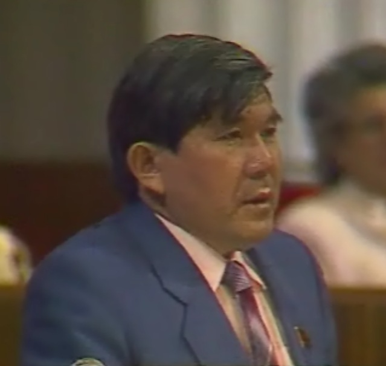

Туған жері
Мұхтар Шаханов 1942 жылы 2 шілдеде қазіргі Түркістан облысы, Отырар ауданында дүниеге келді.
Қазақ руханиятының биігі
«Өз елін сүйе алмаған адам басқа елді де сүйіп жарытпайды»
Сөз өнерін азаматтық ұстаныммен ұштастырып, елдік сана мен әділет жолында ғұмыр кешкен қаламгер.
Ғұмыр жолын тану ↓
Бір ғұмырдың өрнегі
Мұхтар Шаханов — поэзияны халықтың үніне айналдырған көрнекті ақын, публицист және қоғам қайраткері. Оның ғұмыры туған жерге адалдық пен ұлт болашағына жауапкершіліктің жарқын үлгісі.
«Халықтың рухын көтеретін сөз ғана уақыттан озады».
Отырар топырағынан басталған жол қазақ әдебиеті мен қоғамдық ойының кеңістігіне ұласты.
Мұхтар Шаханов 1942 жылы 2 шілдеде қазіргі Түркістан облысы, Отырар ауданында дүниеге келді.
Жас ақынның алғашқы өлеңдері жарық көріп, сыршыл лирикасы мен азаматтық үні оқырманға кеңінен таныла бастады.
Қазақ руханияты, ұлттық тіл және тарихи әділет мәселелерін батыл көтерген шығармалары елдік ойға ықпал етті.
Кремльде Желтоқсан оқиғасына әділ баға беруді талап етіп, халықтың намысын қорғаған сөз сөйледі.
Ақынның шығармалары мен азаматтық ұстанымы тәуелсіз Қазақстанның жас ұрпағына рухани бағдар болып келеді.
Сөзден соққан сәулет
Оның поэзиясында махаббат пен мұң, тарихи жады мен ұлттық намыс қатар тыныстайды. Шаханов сөзі оқырманды ойлануға ғана емес, әрекет етуге де шақырады.
Ұлт тарихындағы қасіретті де қастерлі кезеңнің көркем шежіресі.
Адамзаттың рухани таңдауы мен өркениет алдындағы жауапкершілік туралы толғаныс.
Адам жүрегінің тазалығын, адал сезім мен өмір сұлулығын арқау еткен жырлар.
Азаматтық аманат
Мұхтар Шаханов үшін ақындық — ел тағдырына бейжай қарамаудың бір түрі. Ол сөзін мінберде де, кітапта да халықтың ар-намысын қорғауға арнады.
1989 жылы КСРО Жоғарғы Кеңесінің мінберінде сөйлеген сөзінде ақын 1986 жылғы Желтоқсан оқиғасына берілген бұрмаланған бағаны сынап, оған әділ тарихи баға беруді талап етті. Бұл үн қазақ жастарының намысын қорғаған азаматтық батылдықтың символына айналды.
Арал теңізінің тартылуы мен экологиялық қасіретті әлемдік қауымдастыққа жеткізіп, табиғатты қорғау мәселесін тұрақты көтерді.
Қазақ тілінің қоғамдық өмірдегі орнын нығайту, тіл мәртебесін қорғау жолында табанды еңбек етті.
Тарихтың тірі кадрлары
Мұхтар Шахановтың азаматтық мінбердегі және әдеби ортадағы болмысын көрсететін деректі фотосуреттер.
Фотосуреттер: Wikimedia Commons. Автордың Кремльдегі фотосы жеке архивтен ұсынылды.